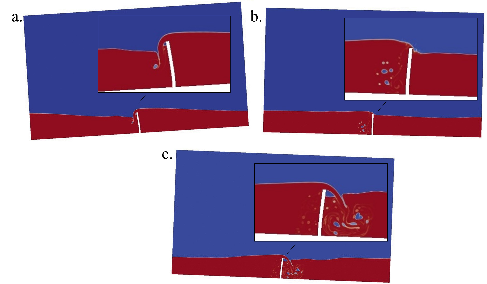
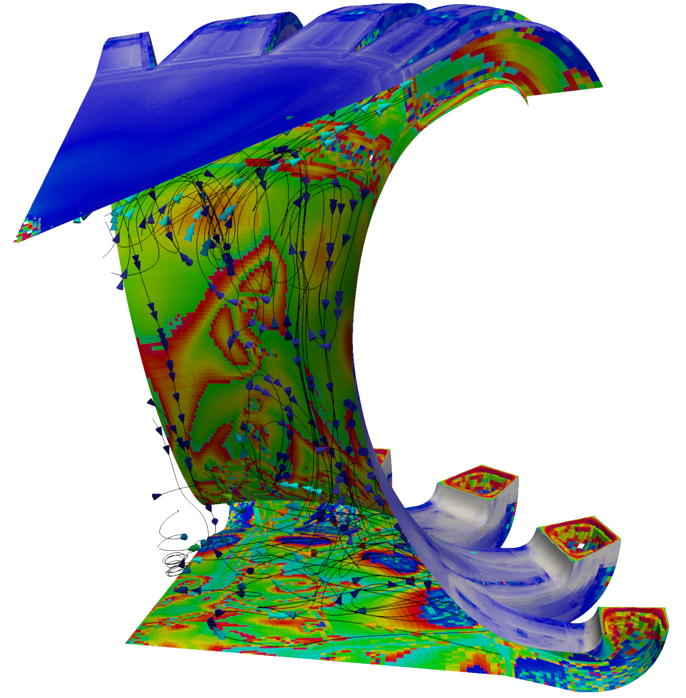
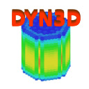
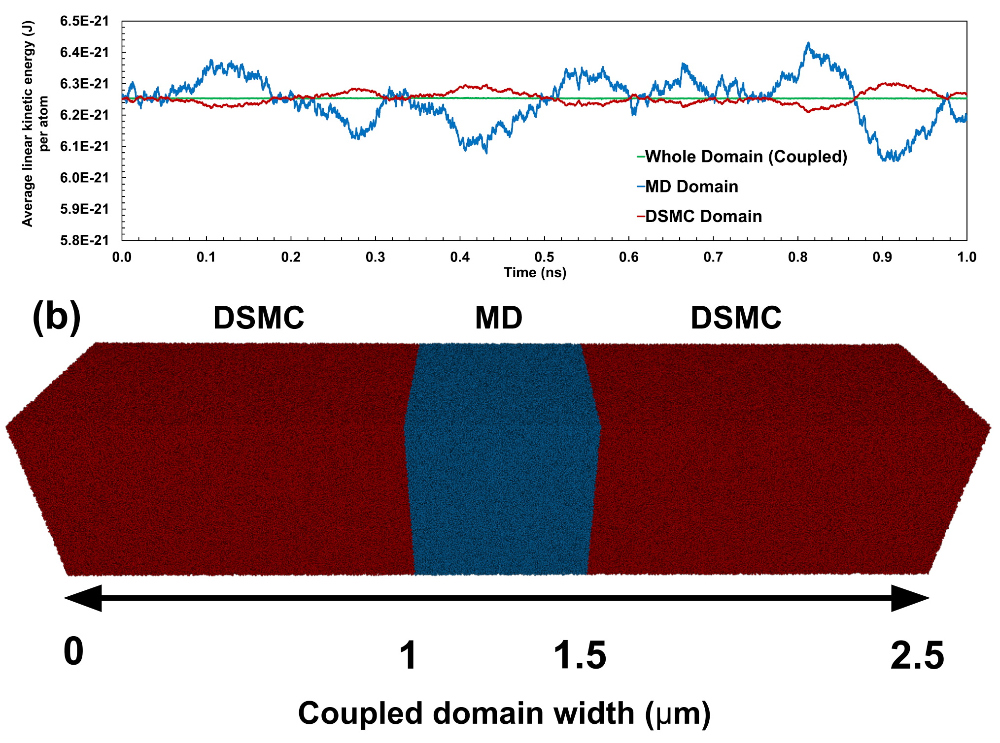

Problem
Description
Codes
Fluid Structure Interaction (Computational Fluid Dynamics coupled with Finite Element Structural Analysis)

Fluid Structure Ineraction problems are ubiquitous in the physical sciences, from understanding how cell membranes interact with internal fluid pressures
through to how liquids slosh in containers or how ocean waves interact with defence structures. A multiphase Volume of Fluid approach from OpenFOAM is
strongly coupled to a structural solver built in the FEniCS framework. Coupling is achieved using a Radial Basis Function spatial interpolation and Aitken's
fixed point iterative scheme.
CFD:
interFoam (OpenFOAM Foundation)
Structural: FEniCS

Molten Salt Fast Reactor (Computational Fluid Dynamics coupled with Neutronics)

Can frozen walls help reduce the effects of container vessel corrosion
in molten salt fast nuclear reactor designs? Unsteady CFD calculations were performed with Code_Saturne and neutronics calculations
by DYN3D-MG. MUI was used as the interface between the two codes, transferring all nodal data between codes at the end of the time-step for the CFD
and end of the outer iteration for the neutronics.
CFD:
Code_Saturne (EDF energy)
Neutronics: DYN3D-MG (HZDR)

Capturing the fluid-gas interface accurately in evaporation modelling (Molecular Dynamics coupled with Direct Simulation Monte Carlo)

Macroscopic modelling of evaporation normally considers the interface between each phase using parameters. To improve the accuracy of this type of simulation methods to capture micro and mesoscopic effects are required. Solvers written in the OpenFOAM environment for Molecular Dynamics (MD, microscopic) and Direct Simulation Monte Carlo (DSMC, mesoscopic) were coupled. MUI is used as a data transport layer and coupling protocol framework. Published results show that the coupled solution still follows the general HPC performance of the slower of the two methods (MD) but the overall size of simulation that can be captured while maintaining correct physics is significantly improved by incorporating the less-computationally intensive method DSMC to capture the majority of a domain when compared to just using MD alone.
General Framework (OpenFOAM Foundation)
MD: mdFoam+ (MicroNanoFlows)
DSMC: dsmcFoam+ (MicroNanoFlows)